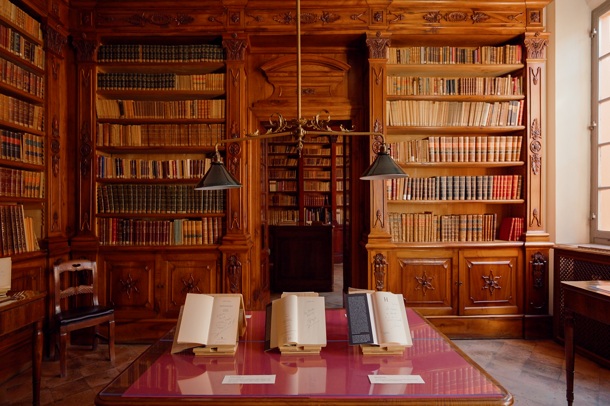
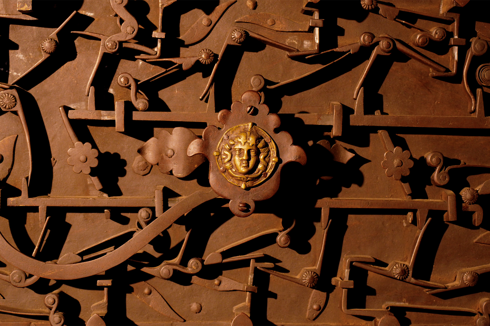
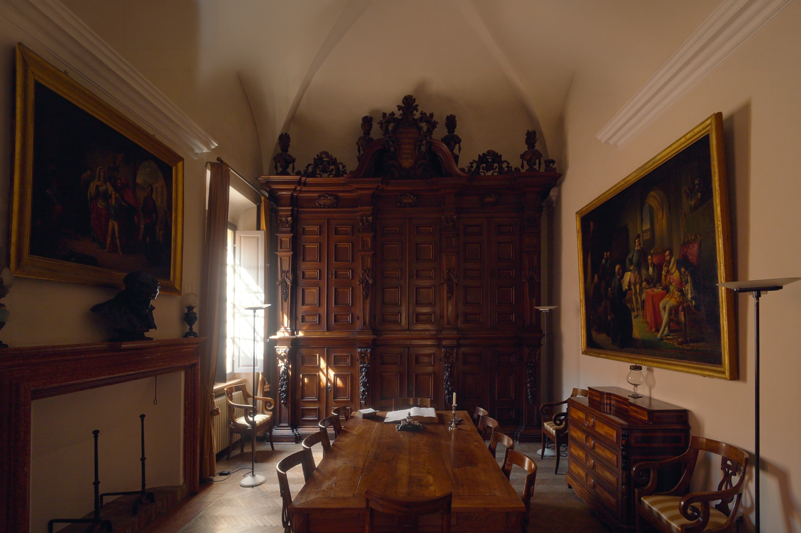

Busseto has seven thousand inhabitants. Everyone knows each other at the bar.
But inside a 16th-century palazzo in the centre of town, there's a library that holds things most museums would never be able to acquire.
Documentary film · 2026
Documentary film for Kreativehouse and Fondazione Cariparma. A 16th-century palazzo in Busseto. Five centuries of human thought.
Watch the filmOpen on YouTube ↗

Busseto has seven thousand inhabitants. Everyone knows each other at the bar.
But inside a 16th-century palazzo in the centre of town, there's a library that holds things most museums would never be able to acquire.

A 1493 book with wooden covers and blank pages left at the end, for history that hadn't happened yet. A copy of what's considered the most beautiful printed book of the Renaissance, one of the few in the world that escaped censorship.
A book made entirely of tin. Another held together by industrial bolts, so dangerous its author said to rest it on a cushion.
And a fortepiano where a very young Giuseppe Verdi fell in love.


That's what this place is. Hidden in a small town in Emilia, quietly holding five centuries of human thought.
I was commissioned by Kreativehouse and Fondazione Cariparma to make a short film about it. Two versions: one for social, one projected inside the library itself. The challenge wasn't finding what to show. It was deciding what to leave out.
The film is built around three ideas: what endures, what remains, what you never expect to find.